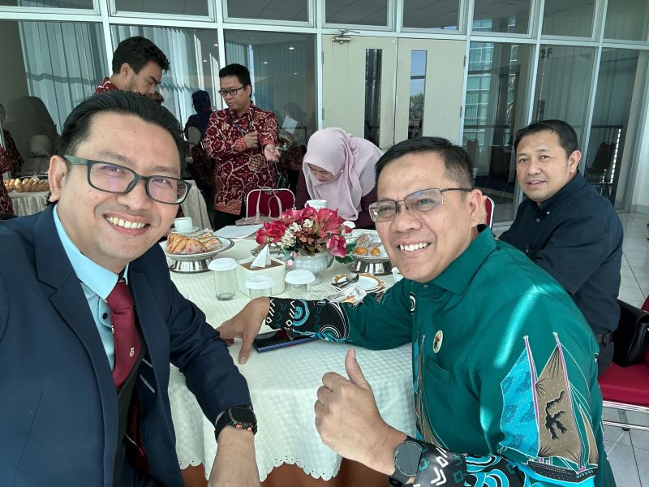
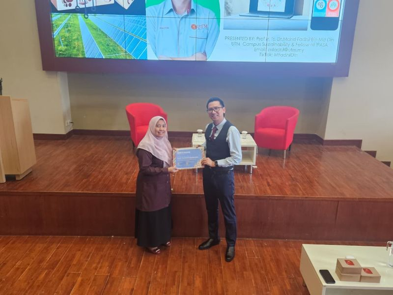

Education Tracks
Informal, non-formal, micro-credentials, and formal academic pathways
Universiti Teknologi Malaysia · Sustainable Campus
Powered by Sustainable Campus & TUNE Erasmus+ CBHE
UTM's integrated platform for green jobs education, connecting learning pathways, industry collaboration, and real-world sustainability implementation.
Select your role to see how the OSC supports you.
Clear green career pathways and employability support through:
Informal, non-formal, micro-credentials, and formal academic pathways
Advisory, placements, research, roundtables, and living lab integration
Campus-based pilots and community-driven sustainability projects
ESG-aligned reporting, TUNE tracking, and employability metrics
A university-wide integrative platform connecting learning, industry engagement, and real-world implementation.
Lifelong green skills development pathways
Bridging education with real-world sustainability needs
Real-world sustainability implementation platform
Example Focus Areas:
Evidence-based quality assurance for sustainability education
An integrated ecosystem linking education, industry engagement, and real-world implementation.
Informal awareness → non-formal upskilling → micro-credentials → formal academic pathways
Co-creation, placements, joint research, roundtables, and community integration
Real-world sustainability pilots, community projects, and industry experimentation
ESG-aligned reporting, TUNE/Erasmus+ tracking, employability metrics, sustainability KPIs
Structured around green skills, institutional readiness, and workforce alignment.
Analyze institutional and market needs for Green Jobs Education.
Build academic and professional staff capacity through ToT and replication seminars.
Upskill students via sustainability-focused courses and micro-credentials.
Strengthen stakeholder dialogue through roundtables and partner forums.
Expand applied learning through projects, community service, and internships.
Translate learning outcomes into real green employability pathways.
Drive visibility and sustainability via conferences, exhibitions, and dissemination.
Led by UTMCCS with coordinated participation across faculties, digital teams, and career services.
Director, UTMCCS
Representative from sustainability-related faculties
UTMCCS / Industry Engagement Unit
UTM Career Centre
UTM Digital / Sustainability Data Team
Embedded in existing UTM governance and reporting frameworks
Structured progression from capability building to measurable employability and sustainability outcomes.
Run TUNE-aligned training, replication seminars, and pedagogical innovation programs.
Align micro-credentials and curriculum with ESG and labour-market green skill needs.
Deploy living labs, industry projects, internships, and community sustainability initiatives.
Track outcomes for TUNE/Erasmus+ reporting and scale model to KL and Pagoh campuses.
Evidence-based quality assurance for learners, staff capability, engagement outcomes, and employability.
Collaborative delivery across ASEAN and international higher education institutions.
Latest updates on green jobs education, keynotes, and publications from the OSC team.

Powered by TUNE (Erasmus+ CBHE), 26-28 October 2026 at Hanoi University of Science and Technology, Vietnam. Green skills, ASEAN-EU policy alignment, and green jobs across energy, transport, agriculture, AI and more — with proceedings (ISBN) and selected papers in Evergreen Journal (SCOPUS) and JST.
View Flyer (PDF) ↗ Conference Details (PDF) ↗
Keynote address at IC-REST 2026 hosted by Universitas Hasanuddin, Indonesia — AI for water security, the blue economy, and green human capital, supported by the TUNE project and Erasmus+.
Read on LinkedIn ↗
Spontaneous Kuliah Tamu at UNHAS after the TUNE keynote — bridging AI + Human Intelligence, green careers, and institutional transformation with undergraduate and postgraduate students.
Read on LinkedIn ↗
New article on Green Jobs and Green Careers in the newly released Nexus publication, aligned with the TUNE Erasmus+ CBHE mission of institutional profiling and sustainability frameworks.
Read on LinkedIn ↗Conversations on sustainability, green careers, and the environment — brought to you by UTM OSC.
Connect your faculty, centre, or industry unit with OSC initiatives in training, innovation, internships, and green talent development.